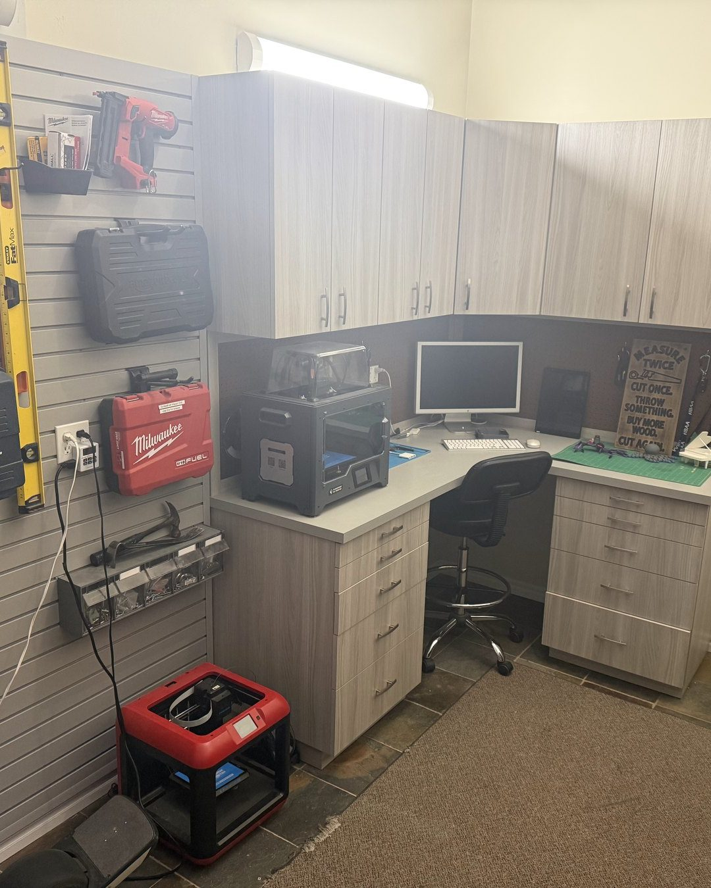

About
Justin Bobesich
I’m a Grade 12 student in Alberta, and I plan to start an engineering degree in Fall 2027.
I’ve been taking things from an idea to a working build since I was young. My projects have ranged from web shooters and 3D-printed products to a working arcade claw machine, a suction wall climber and a robotic arm that recognises faces and responds to voice commands. I enjoy figuring out how mechanisms work, testing my ideas and improving them when the first version fails.
I’m interested in engineering, particularly mechanical design and robotics.
- CurrentlyGrade 12 student
- LocationAlberta, Canada
- NextEngineering, starting Fall 2027
- InterestsMechanical design · robotics
- Current projectRobotic arm with face recognition and voice commands
Skills
What I’ve worked with
Each skill is linked to a project where I used it.
01
Design & Fabrication
- Designing custom partsClaw machine · robotic arm
- 3D printingPrinting for customers · project parts
- Building with wood and toolsClaw cabinet · climber units
- Designing for everyday useDoor lock handle
- WeldingGo-kart (unfinished)
02
Mechanical & Electrical
- Mechanical and electrical assemblyClaw machine
- Motor-driven suctionWall climber
- Troubleshooting and rebuildingClaw machine · wall climber
- Servo motorsRobotic arm
- Programming a Raspberry PiRobotic arm
03
Working with people
- Designing to a request3D printing business
- Producing orders3D printing business
- Marketing, pricing and sales3D printing business
- Tutoring peersMath · chemistry · physics
- Custom-sizing productsCup holder adapters
Timeline
How my projects developed
From a 3D pen to a robotic arm: roughly how my projects have built on each other.
- WhenProjectWhat I learned
- about age 103D penBuilding shapes in three dimensions by hand
- 2020 · age 10–11First 3D printer, printing downloaded designsLearning the software and the printer
- about age 11Web shootersA mechanism that resets itself
- 2021–2025My 3D printing businessUnderstanding what customers need and delivering it
- 2022 · age 12–13Remote door lockFrom a working mechanism to a custom handle I use every day
- Apr 2022 · age 12Arcade claw machine: first cabinetIt never fully worked, so I started over
- Nov–Dec 2022 · age 13Claw machine: second cabinet runningTrial and error inside the machine
- Dec 2022 – Feb 2023 · age 13Suction wall climberSize and seal matter; testing
- 2023 · age 13–14Claw machine: new panel, joystick and glassImproving something that already works
- 2023–2025Custom-designed go-kart (unfinished)Welding
- 2024 – nowRobotic armRaspberry Pi programming, face recognition, voice commands
- Fall 2027Start engineering degree—